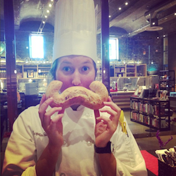

Overeducated and Unemployed
When you first walk across your graduation stage, blushing and beaming in response to the cheers and whistles of the crowd, you feel as if you could do anything.... but instead, your boyfriend of almost a decade exclaims, "congratulations! You're overeducated and unemployed!!!"